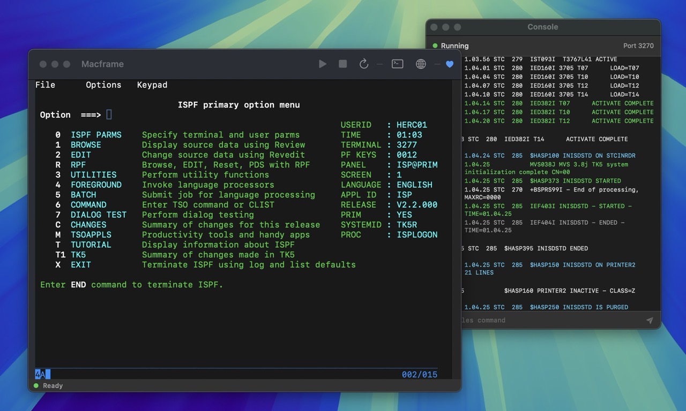
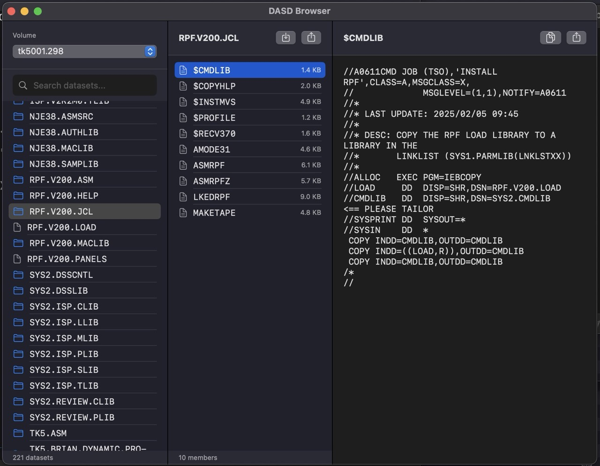

← Back to PEACH STUDIO
 Version 1.1
Version 1.1
Macframe
Run an IBM Mainframe on your Mac. MVS 3.8J with a single click. No configuration required.

Features
One-Click Experience
Just open the app and MVS boots automatically. No terminal commands, no configuration files.
Native 3270 Terminal
Built-in terminal emulator with full 3270 support. No external software needed.
Apple Silicon Native
Optimized for M1, M2, and M3 Macs. Fast and efficient emulation.
Signed & Notarized
Properly signed and notarized by Apple. No Gatekeeper warnings.
FLIP ME
DASD Browser
Browse DASD volumes, search datasets, download and upload data easily without 3270 hassle.

Web Console
Access the Hercules management console in your browser for advanced operations.
System Requirements
macOS
13.0 Ventura+
Processor
Apple Silicon
RAM
4 GB
Disk Space
500 MB
Quick Start
1
Download and open the DMG, drag Macframe to Applications
2
Launch Macframe and wait for MVS to boot (status bar shows "Ready")
3
Press Enter at the terminal to start a TSO session
4
Login with user
HERC01 and password CUL8TRBuilt With
Hercules - S/370, ESA/390, z/Architecture Emulator
MVS 3.8J TK5 - MVS Turnkey System
x3270/c3270 - 3270 Terminal Emulator
SwiftTerm - Terminal Emulator Library
Download Macframe
Free for personal and educational use
Download v1.1 (260 MB)Requires macOS 13.0+ on Apple Silicon (M1/M2/M3)